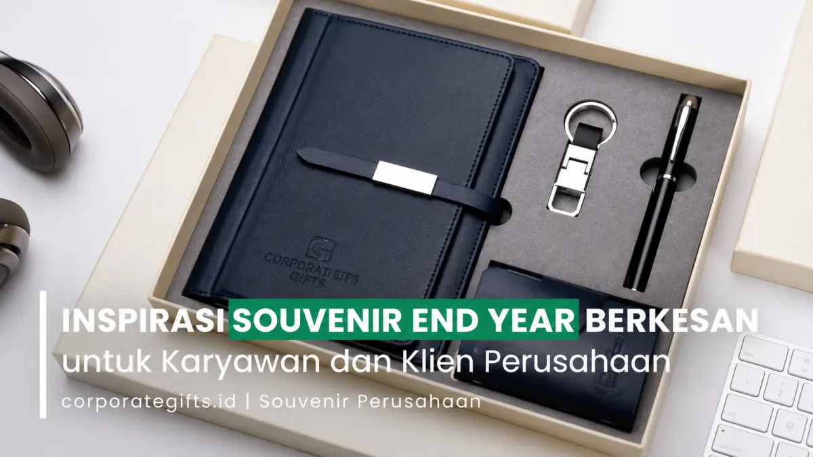

Corporate Gifts ID - Souvenir End Year adalah hadiah apresiasi akhir tahun yang diberikan perusahaan kepada karyawan dan klien bisnis sebagai wujud terima kasih atas dedikasi kerja keras serta kemitraan yang solid sepanjang tahun berjalan. Pemilihan souvenir premium yang dirancang secara tepat terbukti efektif memperkuat loyalitas internal, mempererat retensi hubungan dengan klien kunci, sekaligus merefleksikan citra profesional dan reputasi merek perusahaan di pasar kompetitif.
Menjelang penutupan tahun anggaran, divisi Human Resources (HR), Corporate Communication, dan Marketing biasanya mulai memetakan program apresiasi korporat. Tradisi penyerahan cinderamata akhir tahun bukan sekadar formalitas pembagian bingkisan seremonial, melainkan jembatan emosional untuk menutup tahun kerja dengan rasa puas serta menyongsong target tahun baru dengan optimisme tinggi.
Poin Kunci Souvenir End Year Korporat:
- Investasi Hubungan Jangka Panjang: Souvenir akhir tahun memperkuat ikatan emosional karyawan dan mencegah risiko churn pada mitra bisnis strategis.
- Fungsionalitas Tinggi: Produk yang menunjang gaya hidup aktif atau rutinitas kerja harian (tumbler stainless, powerbank, agenda) memiliki retensi penggunaan tertinggi.
- Personalisasi Berkelas: Sentuhan kustomisasi nama penerima, kemasan hardbox eksklusif, dan kartu ucapan apresiasi personal melipatgandakan nilai prestise hadiah.
- Perencanaan Waktu Matang: Pemesanan ideal dilakukan 1 hingga 2 bulan sebelum pergantian tahun (Oktober hingga November) untuk menjamin kelancaran produksi massal.
Mengapa Souvenir End Year Menjadi Investasi Strategis Perusahaan?
Dalam ekosistem bisnis modern, pengeluaran untuk cinderamata akhir tahun tidak lagi dipandang sebagai beban biaya (cost center), melainkan sebagai investasi strategis dalam mempertahankan aset terpenting perusahaan: sumber daya manusia yang loyal dan mitra bisnis yang tepercaya.
Bagi karyawan, menerima hadiah yang dikurasi dengan baik menghadirkan rasa dihargai atas lembur, pencapaian target, dan tantangan kerja yang dilalui bersama. Sementara bagi klien B2B, bingkisan akhir tahun adalah tanda bahwa perusahaan Anda menjunjung tinggi nilai kemitraan dan berkomitmen melanjutkan sinergi produktif di masa mendatang.

Ragam pilihan souvenir fungsional, perangkat elektronik, dan hampers akhir tahun berkualitas tinggi siap kustom logo.
Segmentasi Kebutuhan: Souvenir Karyawan vs Cinderamata Klien Bisnis
Pendekatan dalam memilih jenis souvenir harus disesuaikan dengan profil penerima agar tidak salah sasaran:
1. Souvenir untuk Karyawan Internal: Karyawan cenderung menyukai barang-barang yang dapat menunjang kenyamanan kerja atau gaya hidup sehat harian. Pilihan seperti souvenir tumbler custom berbahan stainless steel food-grade, ransel kerja ergonomis, jaket hoodie kantor, atau wireless mouse berlogo perusahaan sangat diapresiasi karena langsung terpakai.
2. Souvenir untuk Klien dan Mitra Bisnis: Klien eksekutif menghargai kualitas premium, desain minimalis, dan fungsionalitas elegan. Kombinasi buku agenda bersampul kulit sintetis PU, pena berbobot seimbang dengan teknik grafir laser halus, powerbank bersertifikasi keselamatan, atau hampers gourmet dalam kotak kaku eksklusif mencerminkan standar profesionalitas tinggi dari institusi Anda.
Matriks Perbandingan Kategori Souvenir End Year
Berikut rangkuman perbandingan kategori souvenir akhir tahun yang dapat menjadi acuan perencanaan anggaran panitia pengadaan:
| Kategori Souvenir | Contoh Item Unggulan | Target Penerima Utama | Kelebihan Strategis |
|---|---|---|---|
| Fungsional Harian | Tumbler Vacuum SUS 304, Payung Lipat Otomatis, Mug Keramik | Seluruh karyawan & pelanggan umum | Biaya efisien, frekuensi pemakaian tinggi, eksposur logo berulang |
| Gadget & Elektronik | Powerbank Fast Charging, TWS Earbuds, Wireless Desk Charger | Tim sales, pekerja hybrid, klien tech-savvy | Mewah, modern, menunjang produktivitas digital harian |
| Executive Gift Set | Buku Agenda Kulit PU, Pulpen Metal Grafir, Flashdisk Kartu | Manajer, pimpinan divisi, mitra bisnis VIP | Sangat formal, elegan, meningkatkan wibawa korporat di meja rapat |
| Corporate Hampers | Artisan Tea/Coffee, Cookie Premium, Lilin Aromaterapi, Eco-Bag | Klien prioritas, direksi instansi, keluarga staf | Memberikan kehangatan emosional dan pengalaman unboxing berkesan |
5 Kategori Pilihan Souvenir End Year Terpopuler
Berikut eksplorasi mendalam lima kategori cinderamata akhir tahun yang paling diminati perusahaan di Indonesia:
1. Barang Kebutuhan Sehari-hari yang Fungsional
Produk yang memiliki kegunaan nyata tetap memuncaki daftar preferensi penerima. Botol minum tumbler stainless steel berdinding ganda (double-wall vacuum) menjaga kesegaran minuman dingin atau kopi hangat sepanjang hari kerja. Selain praktis, produk ini mengkampanyekan gaya hidup bebas sampah plastik sekali pakai. Tas kerja multifungsi, payung lipat kokoh berkanopi anti-angin, dan mug enamel custom juga menjadi opsi andalan untuk pemesanan kuantitas besar.
2. Perangkat Elektronik sebagai Souvenir Modern
Gaya hidup profesional saat ini menuntut keterhubungan tanpa henti. Menghadiahkan powerbank berkapasitas 10.000 mAh hingga 20.000 mAh bersertifikasi proteksi keselamatan baterai memberikan nilai kepraktisan yang tinggi saat dinas luar kota. Aksesori nirkabel seperti TWS earbuds untuk panggilan rapat virtual dan wireless charging pad meja kerja menghadirkan citra korporat yang visioner dan adaptif terhadap inovasi teknologi.
3. Paket Gift Set Eksklusif dan Personal Touch
Bagi perusahaan yang menginginkan impresi mewah, memilih paket gift set yang dikemas dalam kotak kaku (rigid hardbox) berlapis busa presisi adalah pilihan ideal. Di dalamnya, kombinasi notebook kulit, pena metal berat, dan gantungan kunci kulit sintetis dapat diselaraskan warnanya dengan palet identitas brand. Menambahkan personalisasi nama individual penerima melalui teknik laser engraving meningkatkan rasa eksklusivitas, menjadikan souvenir tersebut barang koleksi yang dijaga dengan bangga.
4. Hampers Perusahaan yang Penuh Makna dan Ramah Lingkungan
Paket hampers dan parcel akhir tahun bertema keberlanjutan (eco-friendly) kini menjadi tolok ukur kepedulian sosial perusahaan. Penggunaan keranjang anyaman serat alam, wadah boks kayu pinus daur ulang, atau tote bag kanvas tebal yang diisi dengan produk artisan lokal (biji kopi Nusantara pilihan, madu murni, atau sabun aromaterapi organik) memperlihatkan kehangatan perhatian yang tulus sekaligus mendukung pemberdayaan UMKM lokal.
5. Souvenir Pendamping Bonus Tahunan & Planner Baru
Membagikan cinderamata penutupan tahun bersamaan dengan pengumuman bonus tahunan atau rapat evaluasi akhir tahun (annual townhall) menciptakan momentum perayaan yang berlipat. Menghadiahkan buku agenda perencana tahun baru (Annual Planner 2026) berbalut sampul kulit eksklusif dan pulpen tanda tangan memberi dorongan semangat kepada seluruh tim untuk menyusun target kinerja baru dengan fokus yang lebih tajam.
Tips Memilih Supplier Souvenir End Year dan Timeline Ideal
Kunci sukses pengadaan cinderamata akhir tahun terletak pada manajemen waktu yang disiplin. Akhir tahun merupakan periode puncak produksi (peak season) bagi industri merchandise di seluruh Indonesia. Berikut langkah-langkah praktis untuk menghindari keterlambatan:
- Mulai Kurasi Sejak Oktober: Mengamankan stok produk dan jadwal slot produksi sejak bulan Oktober memberikan rasa aman dari risiko kehabisan bahan baku impor maupun lonjakan tarif ekspedisi di bulan Desember.
- Minta Sampel Mockup Fisik: Sebelum menyetujui produksi massal ribuan unit, pastikan vendor mampu menyediakan sampel produk fisik berlogo guna memverifikasi ketajaman cetak, kerapian jahitan, dan keaslian material.
- Verifikasi Rekam Jejak Vendor B2B: Pastikan bekerja sama dengan vendor profesional seperti CorporateGifts.ID yang memiliki legalitas resmi, mampu menerbitkan faktur pajak lengkap, dan menyediakan opsi personalisasi fleksibel.
- Jelajahi Katalog Digital Terpusat: Anda dapat mengeksplorasi ratusan opsi cenderamata siap kustom melalui menu Katalog Resmi Corporate Gifts atau langsung berkonsultasi via WhatsApp dengan tim representatif kami untuk mendapatkan proposal penawaran harga (RAB) terbaik.